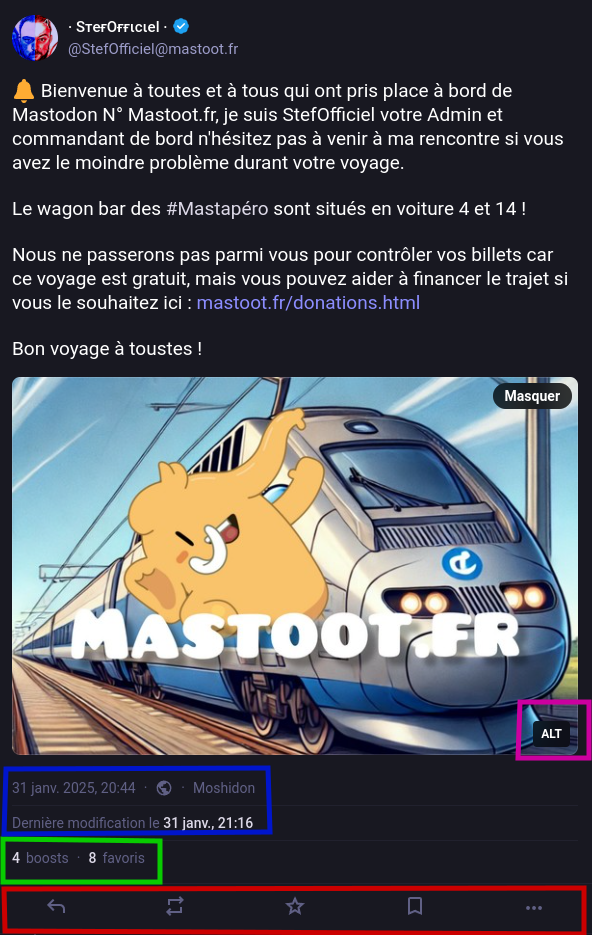
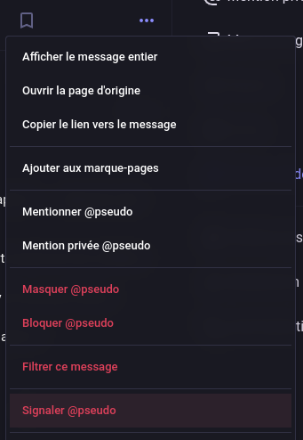

Comprendre une publication
Quels sont les éléments clefs à retenir sur une publication ?
Voici une publication publique provenant de @stefofficiel@mastoot.fr
Explication en couleurs :
■ "ALT" correspond au "ALT-Text" c'est à dire au texte alternatif qui décrit l'image ou met de façon textuel un contenu texte dans une image. Pour quoi faire ? Pour les personnes ayant une déficiance visuelle, ça leur permet de comprendre l'image, mais aussi pour l'outil de traduction, pour qu'une personne ne parlant pas votre langue puisse tout de même comprendre.
■ En premier, la date et l'heure de publication. Ensuite, la petite terre signifie que le Toot est publique (nous y reviendrons plus tard), ici "Moshidon" c'est l'application utilisé pour publier ce Toot, il peut être "Web" quand c'est fait depuis le navigateur mais aussi "Mastodon Android" ou "Mastodon iOS" qui sont les applications officielles. En dessous vous trouverez la date de la dernière modification et en cliquant dessus, vous pouvez voir ce qui a été modifié.
■ Les "boosts" sont les repartages, aussi appelé ReToot (les fameux RT comme les ReTweet sur 𝕏). À côté, le nombre de fav qu'a reçu cette publication.
■ De gauche à droite : "Répondre" | "ReToot" | "Fav" | "Épingler" | "Plus d'options"
Voyons en détail :
Explications de la barre d'interraction
Explication en couleurs :
■ En cliquant sur cette flèche (qui peut être une double flèche) ça vous permet de répondre à ce Toot.
■ En cliquant sur ces double flèches, ça repartage ce Toot dans votre fil et le montre à vos followers. Attention, si le message n'est pas public, il sera visible dans votre fil par vos followers qui suivent aussi cette personne.
■ En cliquant sur l'étoile, ça mettra le message en favoris, en "fav" c'est un peu le "j'aime" de Facebook.
■ En cliquant sur ce bouton, ça placera ce Toot dans vos messages épinglés pour que vous puissiez le retrouver plus tard, ce n'est visible que pour vous.
■ Les trois points offrent plus d'option comme le signalement, le blocage et d'autres.
Signaler quelqu'un
Bloquer quelqu'un

Note : N'hésitez pas à essayer de cliquer un peu partout, vous ne risquez pas de tout casser 😉
En vidéo
Super ! Allons un peu plus loin :
Une autre vidéo pour vous montrer les différentes interractions pour publier ainsi que l'ajout du ALT-Text.
Et enfin :
Une dernière vidéo pour vous montrer comment trouver du contenu d'une autre instance sur Mastoot.fr.